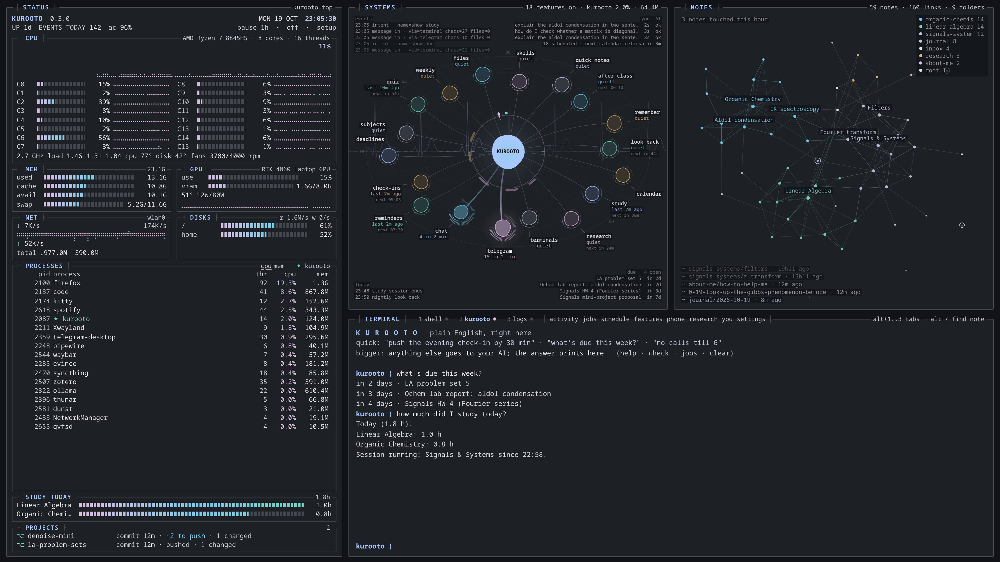
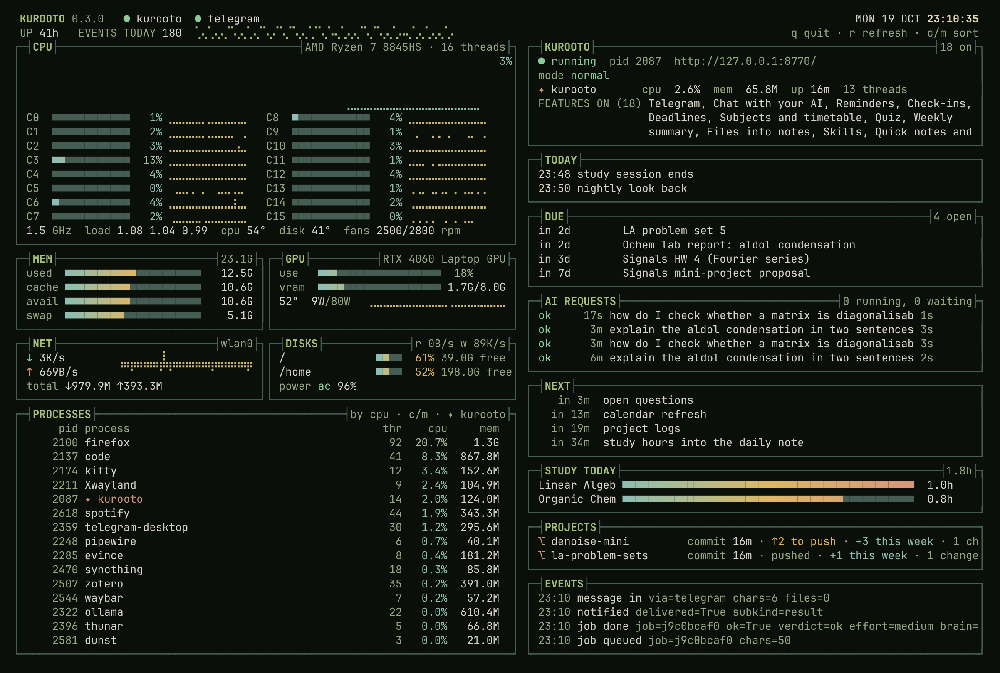
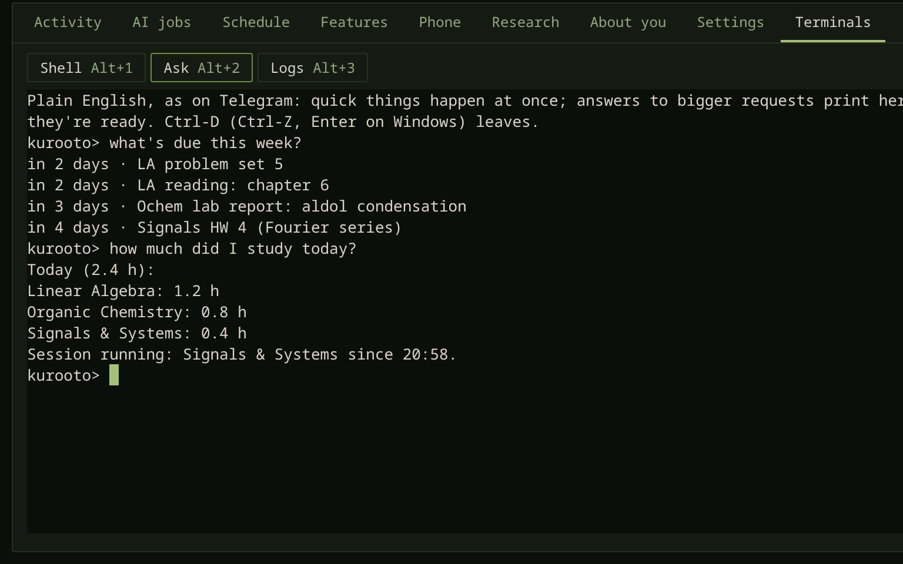
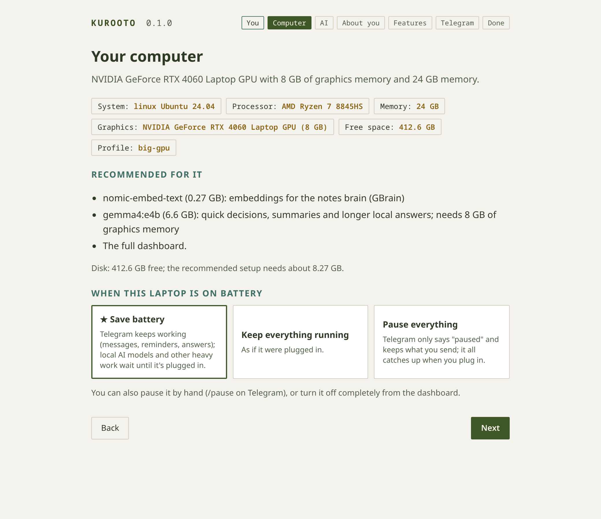
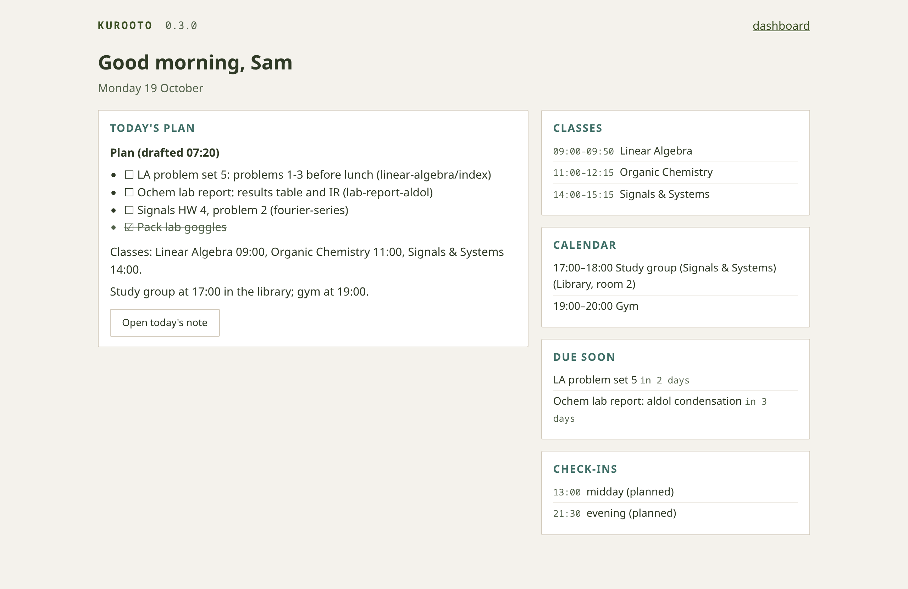

It learns your hours
Check-ins move to the times you actually answer, and the part of the day it plans work into follows when you're really around, not a 9-to-5 someone else picked.
An assistant that lives on your computer and fits itself to your days
Talk to it on Telegram or in its phone app, let it call you, and pick the AI behind it. Over the first weeks it learns the hours you actually keep, picks things up from what you tell it, and keeps quiet when it should. When a day goes sideways, it helps you pick it back up. It runs on Windows, macOS and Linux, needs no admin rights, costs nothing to run, and every feature is off until you turn it on.
Paste one line. A setup page opens in your browser and walks you through the rest. These lines install the beta: everything Kurooto can do today, with new versions as soon as they're signed.
In PowerShell (not as administrator).
$env:KUROOTO_CHANNEL='beta'; irm https://avtarfr.github.io/kurooto/install.ps1 | iexIn a terminal.
curl -LsSf https://avtarfr.github.io/kurooto/install.sh | KUROOTO_CHANNEL=beta sh
A beta, tried on only a few computers so far. It's used every day on one Linux laptop and
tested automatically on Windows, macOS and Linux, but it hasn't met many real PCs yet. If something goes wrong,
kurooto doctor says what, and kurooto doctor --bundle makes a report you can send
(secrets taken out). Trying it on your computer is the most useful thing you can do for it.
You'll need a Telegram account on your phone, and a Google account (or a free Gemini key) for the AI. Releases are signed, and Kurooto updates itself at night, rolling back by itself if an update fails.
Prefer something steadier? Leave out KUROOTO_CHANNEL to install
the stable channel: older, with fewer features.
Most assistants wait to be told. Kurooto pays attention to how your days actually go, and every change it makes comes with a line saying what it did and an Undo.
Check-ins move to the times you actually answer, and the part of the day it plans work into follows when you're really around, not a 9-to-5 someone else picked.
Mention a new project and who you're working with, and the project note is started. Say you have a lab every Monday at 9, and it's in your timetable. Say "by stoch I mean Stochastic Processes", and it remembers.
"I got a project under Prof Lena Ortiz on ring models"
Slept through the morning? Your plan moves to start from now, in the same order, with the breaks kept. Classes you missed get a catch-up before the next one and a note to fill in, and nobody asks whether you went.
"I just woke up, reschedule my day"
A daily limit on messages it starts by itself, a "Less of this" on every one, and no calls in class, during focus or at night. After ten days it asks which features you actually use, and lets the rest go quiet.
While you sleep it reads your books into your notes and links what belongs together, then sends one morning message: what it did, and the loose ends worth a look. It also checks that nothing it learned made it worse at what you taught it.
Tap Wrong when it misunderstands, or just say it again in other words: it learns the phrasing, and only keeps a lesson if everything you taught it before still works.
It remembers what you've been through together until you decide otherwise: /forget 7d lets the last week go, or have conversations fade on their own after a month. Your notes are yours and never touched. Nothing leaves your computer unless a feature you turned on needs it.
Every AI answer ends with one quiet line from its own record: which AI, how long, and what it actually did, down to "did nothing". When something breaks, /fixme says what and how to fix it, even if the AI is the part that broke.
Turn on only what you want; each feature says what it needs and what leaves your computer.
Plain English: "remind me at 9 to call home", "what's due this week?". Questions go to your AI, answers come back as replies.
Real voice calls on your own free call line: check-ins, reminders and a morning alarm, on Android or iPhone.
A Gemini API key (recommended), Antigravity, Claude Code, FreeLLMAPI or local models with Ollama, with a fallback.
Subjects and timetable, a deadline radar, spaced-repetition quizzes, study time tracking and after-class notes.
A notes folder with search by meaning, synced to your own private GitHub repository if you want.
On battery, heavy work waits for the charger while Telegram keeps working. Pause it, or turn it off completely.
A demo with made-up data: Sam, a student taking Linear Algebra, Organic Chemistry and Signals & Systems.

Your computer, every feature at work, your notes and their links, and a terminal for plain English, live, on a page only this computer can open.

Keep Kurooto's greens, or let its pages follow your desktop's accent colour and light or dark mode.

kurooto top shows the same board in any terminal, on Windows, macOS and Linux.

Type what you'd send on Telegram: quick things happen at once, and bigger questions go to your AI, with the answer printed right there. Your AI's own program, a shell and Kurooto's log can sit in tabs beside it.


The wizard checks your graphics card, memory and free space, then recommends what to run here and what to leave to the AI you pick.


The day's plan, drafted before your alarm, next to your classes, calendar, deadlines and check-ins.


Plain English on Telegram (an example chat), and your own call line: Kurooto calls you, and questions wait in an inbox on Android or iPhone.
More: setup: welcome · setup: AI · setup: about you · setup: features · setup on a phone · features tab · research sources · pairing an iPhone
What's being built for the next version, and what people have asked for. The beta (the install lines above) gets every version the day it's signed; stable gets it once it has run on beta for a while. Both update by themselves at night, and roll back on their own if an update keeps crashing.
The user wiki covers every feature, command, setting and fix. The developer wiki explains how Kurooto is built, for people and for AI agents. Your own AI agent can follow AGENTS.md to help you set up. Your Kurooto's /help lists everything it can do and links here.